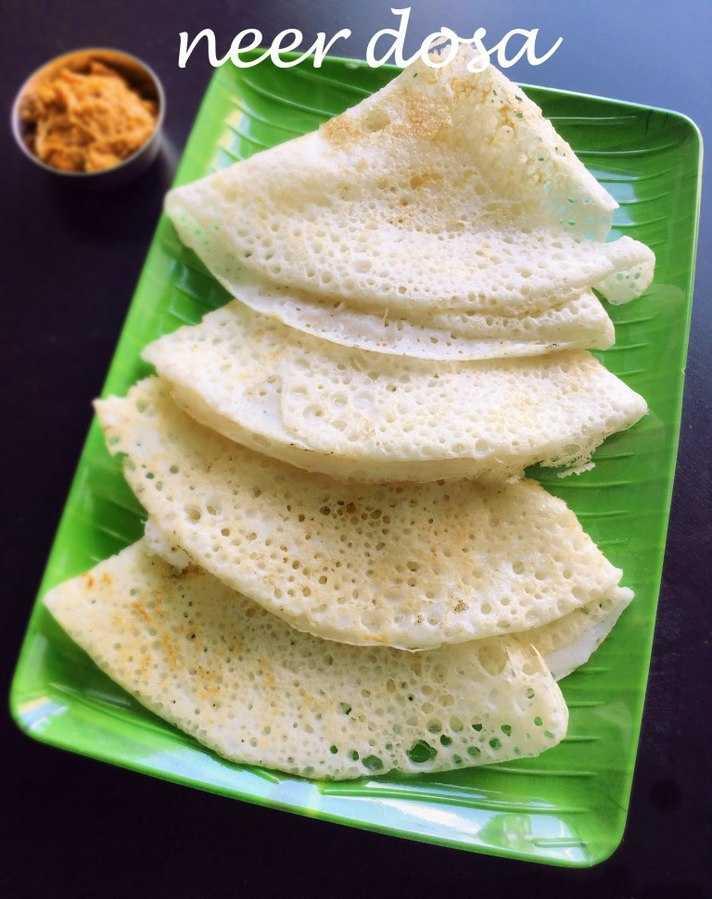
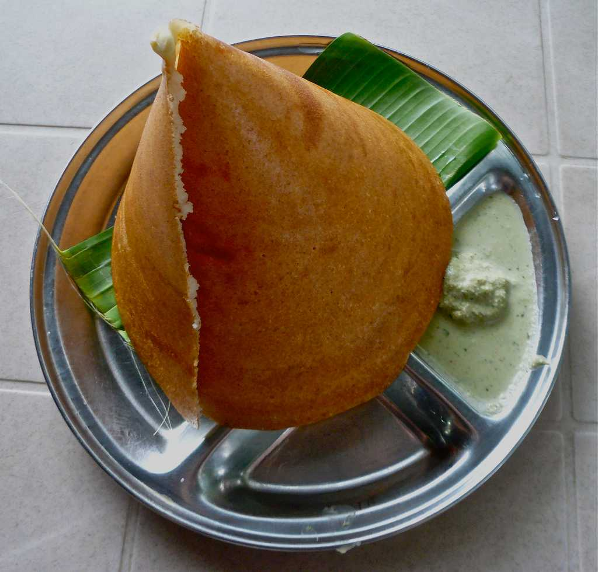
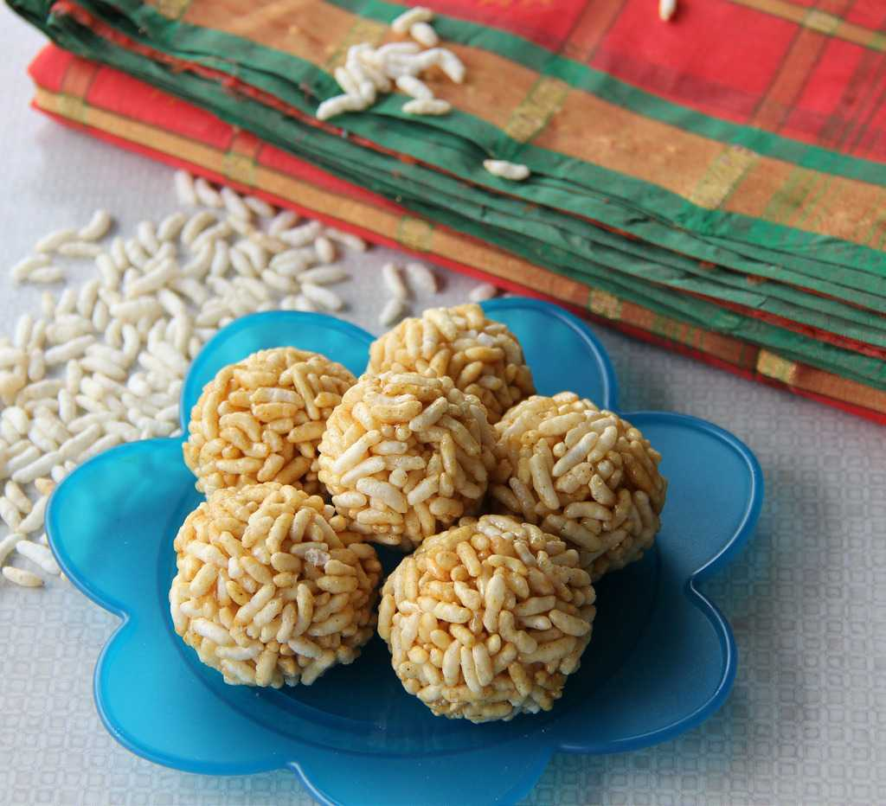

- Neer Dosa
The word 'neer' means water in Tulu language. Neer dosa is a very famous dish that consists of rice dosa. To make the dosa, rice is to be soaked overnight for a few hours in the water, and no fermentation is required. Since rice is easily available in Karnataka, Neer Dosa is found at many places and restaurants. Neer dosa is served with chutney, curry or sambar.

- Mysore Masala Dosa
The Mysore masala dosa is another form of dosa with chutney or paste applied to it. It is a crisp dosa with red chutney and mashed potato filling in it. The dosa is served with white and red coconut chutney along with sambar.

- Pori Urundai
Pori means puffed rice or the kurmura that we eat. Pori urundai is a sweet dish that consists of puffed rice balls combined and coated with jaggery. The secret behind making the perfect pori urundai is to melt the jaggery to a particular state at a certain temperature. Pori urundai is consumed as a snack Along with tea or coffee.
